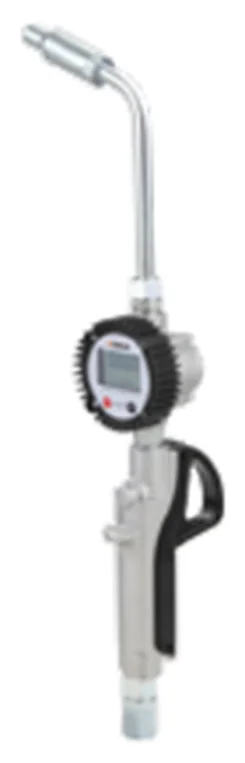

GROZ · Oiling Equipment
Electronic Oil Control Gun Professional
CAT NR OM/2000/OGN/FB-A/N · ORD NR 47045
| CAT NR (catalogue number) | OM/2000/OGN/FB-A/N |
|---|---|
| ORD NR (order number) | 47045 |
| Box quantity | 6 |
| Variant (printed column) | NPT THREAD |
| Non-drip nozzle | Automatic |
| Table section | WITH FLEXIBLE HOSE EXTENSION WITH BENT STEEL PIPE |
Open in the catalogue The catalogue PDF, page 171
From the GROZ Fluid Handling CC-07 catalogue. Not yet verified: these details were read from the printed catalogue automatically; check the catalogue page before ordering.